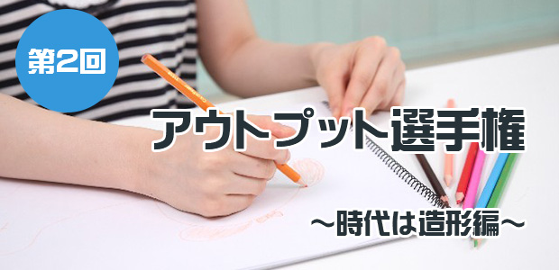
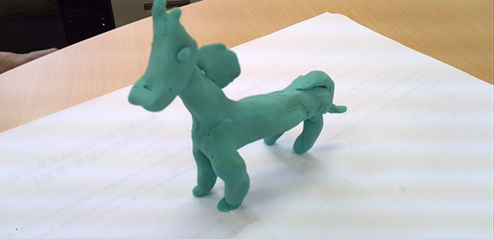
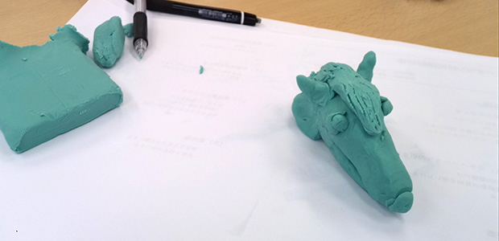
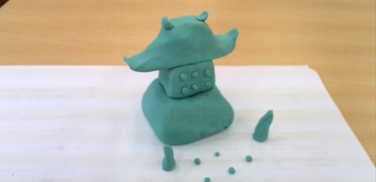
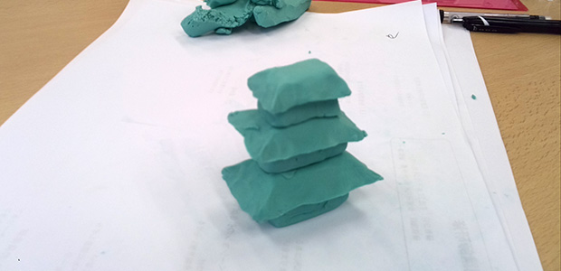
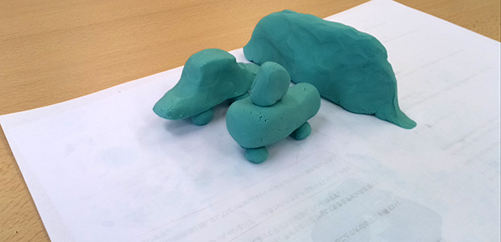
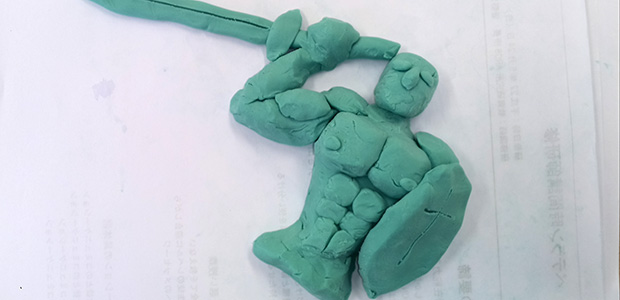

時代は造形
情報がいつどこでも取得できる時代になったことで、逆に取得した知識が個人の中に定着する濃度が薄まったような気がします。
自分を省みても、例えばこのブログのように文章を書くという機会は多いものの、その全てがキーボード入力によるもの。
したがって、ペンを持って漢字を書くことがめっきり無くなってしまい、「読めるが書けない漢字」が増える一方です。
しかし、それではアカン！ ─※2015/04/15「第１回アウトプット選手権！より」─
そう、持っている情報を「しっかりと自分の言葉や表現で再現できる」というレベルでの知識の定着を目指そう──。
その思いを伝える手段の一つ…それがアウトプット選手権なのです。
第１回ではお題をもとに絵を描くことでアウトプット対決を行いました。
そしてこの第２回では、「造形」。
粘土を使って、よりテーマに即したモノを表現するという対決です。
対戦カードは、お馴染みの「池村ＶＳホームページ支配人」
いざ！
熱戦の結果は！？
今回のお題は３つ
「動物」「建物」「抽象的な概念」
これらのお題に基づいて私たちが粘土で造形し、研究所職員に「まずは何を作ったのか」を当ててもらい、そしてどちらがイケているかをジャッジしてもらうというもの。
皆さんも写真を見てジャッジしてみて下さい。
あえて正式なお題ワードはスクロールしないと見えないようにします。
お題その１：とある『動物』（制限時間５分）
池 村「フッ…ありがちなアプローチだな。俺はあえて頭部で勝負する」
支配人「いやいや～はっきり言ってそれ、キモいですよ？」
池 村「な…！？」
●支配人作

●池村作

支配人「さあ、皆さん。これは何でしょう？」
職員Ｋ「…牛？」
所 長「ていうか、池村君の何？ 古代生物？」
池 村「……」
所 長「え、馬なの！？」
職員Ｋ「シーラカンスみたい。なんか気持ち悪い…」
所 長「支配人のやつは、まぁ言われれば馬かな」
支配人「勝負ありましたね！」
テーマは馬、勝者は支配人！
お題その２：とある『建物』（制限時間１０分）
池 村「さっきは変に個性を出そうとして失敗したが、今度はスマートにいくぜ」
支配人「これ、けっこう時間がかかりますね。間に合うか…」
●支配人作

●池村作

広報Ａ「まあ、なんか建物っぽいというのはわかる」
職員Ｋ「あら、なんか支配人のはお庭があってステキ！」
池 村「くっ…！ まずい展開…」
所 長「何だろうな？ もしかして城か！？」
支配人「正解です！」
広報Ａ「あぁ、でも二人合わせてやっと城かもな…っていう感じ」
所 長「池村君のは五重塔とかそういうのかな」
池 村「そんなイメージです」
広報Ａ「支配人のは中国系のイイ味出てる」
支配人「そうそう！ ほら、なんかここまでたどり着いたらラスボスに会えそうでしょ」
職員Ｋ「あ、なんかわかる～」
池 村「ちょっと無難にいきすぎたか…ここは負けを認めよう」
テーマは城、勝者は支配人！
お題その３：とある『概念』（制限時間１０分）
池 村「このままではマズイ…最終試合はポイント１０倍を提案する！」
支配人「え…それって、クイズ番組でよくある‘今までの戦いは何だったんだ’系のやつでは…？」
池 村「そう思ってもらって結構。なにせ最後のテーマが最も力が問われるからね」
●支配人作

●池村作

支配人「やばい、迷走している！ 方向性が定まらない」
池 村「これ、ムズカシイわ…もう見た目の完成度で勝負するしかねぇ」
広報Ａ「あ、池村先生また筋肉方向ですかぁ？」
池 村「どんなテーマが見えてくる？」
広報Ａ「ん～～‘インパクト’かな？」
支配人「ちょっと違いますね」
職員Ｋ「挑戦？」
池 村「悪くはないけど…」
職員Ｋ「当たって砕けろ？（支配人のやつ見ると）」
広報Ａ「恐れるな！みたいな？」
支配人「うわ、かなり近いですよ！」
職員Ｋ「勇気！？」
支配人「大正解～！ まあもともとは英語のbrave（勇敢な）って考えてたんですけど」
広報Ａ「そう聞くと、池村先生の方がしっくりくるかなぁ。なんか西洋的な」
池 村「そうでしょう、そうでしょう！ 戦士のイメージですよ」
職員Ｋ「支配人は何を作ったんですか？」
池 村「やはりな、これは知っている人にしか伝わらない！」
支配人「チキンレースです…」
（※チキンレース：乗り物に乗って崖や障害物に向かって走り、いかにギリギリまでブレーキをかけずにいられるかを競う度胸試し。良い子のみんなは真似しないように！）
職員Ｋ「知らな～い！」
池 村「勝負あったな」
テーマはbrave、勝者は池村！
さて、今回のアウトプット選手権、どうでしたか？
次回はまた違う設定で、いつかどこかで会いましょう！